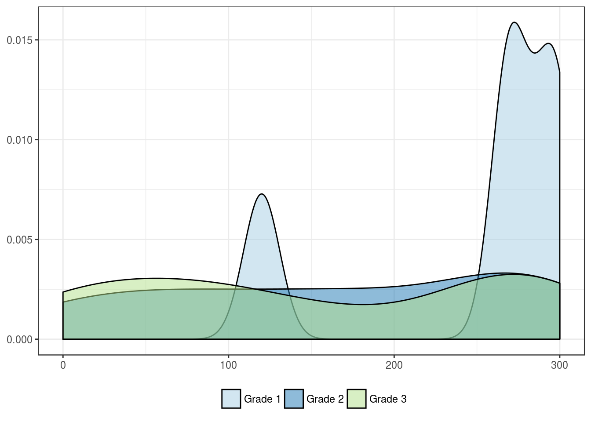

ARID1a by clinicopathologic features
ARID1a H-scores
Patient’s age group
Categorized by median age
| Younger age | Older age | |
|---|---|---|
| Mean | 149.1 | 176.3 |
| Standard deviation | 106.8 | 108.9 |
| Median | 140.0 | 185.0 |
| Interquartile range | 200.0 | 200.0 |
| Minimum | 0.0 | 0.0 |
| Maximum | 290.0 | 300.0 |
| Value | |
|---|---|
| U-statistic | 658 |
| P statistic | 1.8e-01 |
Patient’s sex
| Female | Male | |
|---|---|---|
| Mean | 148.4 | 173.2 |
| Standard deviation | 109.5 | 106.9 |
| Median | 130.0 | 182.5 |
| Interquartile range | 213.8 | 195.0 |
| Minimum | 0.0 | 0.0 |
| Maximum | 300.0 | 292.5 |
| Value | |
|---|---|
| U-statistic | 714 |
| P statistic | 4.8e-01 |
Tumor location
| Pelvis | Pelvis-Ureter | Ureter | |
|---|---|---|---|
| Mean | 139.6 | 228.1 | 175.4 |
| Standard deviation | 104.6 | 112.5 | 108.4 |
| Median | 130.0 | 280.0 | 185.0 |
| Interquartile range | 195.0 | 73.1 | 197.5 |
| Minimum | 0.0 | 60.0 | 0.0 |
| Maximum | 290.0 | 292.5 | 300.0 |
| Value | |
|---|---|
| Statistic | 4.704 |
| Parameter | 2 |
| P statistic | 0.095 |
pT stage
| pTa | pT1 | pT2 | pT3 | pT4 | |
|---|---|---|---|---|---|
| Mean | 169.3 | 131.1 | 189.7 | 174.1 | 79.4 |
| Standard deviation | 102.9 | 114.3 | 93.3 | 106.6 | 140.7 |
| Median | 182.5 | 110.0 | 210.0 | 177.5 | 13.8 |
| Interquartile range | 180.0 | 219.4 | 148.8 | 187.5 | 85.6 |
| Minimum | 0.0 | 0.0 | 60.0 | 0.0 | 0.0 |
| Maximum | 300.0 | 292.5 | 292.5 | 292.5 | 290.0 |
| Value | |
|---|---|
| Statistic | 3.521 |
| Parameter | 4 |
| P statistic | 0.47 |

Histologic grade
| Grade 1 | Grade 2 | Grade 3 | |
|---|---|---|---|
| Mean | 250.5 | 164.0 | 150.9 |
| Standard deviation | 74.2 | 104.8 | 110.7 |
| Median | 270.0 | 173.8 | 130.0 |
| Interquartile range | 22.5 | 203.8 | 208.8 |
| Minimum | 120.0 | 0.0 | 0.0 |
| Maximum | 300.0 | 292.5 | 290.0 |
| Value | |
|---|---|
| Statistic | 4.648 |
| Parameter | 2 |
| P statistic | 0.098 |

WHO histologic grade
| Low Grade | High Grade | |
|---|---|---|
| Mean | 99.4 | 174.6 |
| Standard deviation | 101.0 | 105.8 |
| Median | 60.0 | 182.5 |
| Interquartile range | 135.0 | 197.5 |
| Minimum | 0.0 | 0.0 |
| Maximum | 290.0 | 300.0 |
| Value | |
|---|---|
| U-statistic | 270 |
| P statistic | 3.1e-02 |

Lymphovascular invasion
| Lymphovascular invasion | No lymphovascular invasion | |
|---|---|---|
| Mean | 176.6 | 152.9 |
| Standard deviation | 119.3 | 100.0 |
| Median | 252.5 | 145.0 |
| Interquartile range | 226.2 | 178.8 |
| Minimum | 0.0 | 0.0 |
| Maximum | 292.5 | 300.0 |
| Value | |
|---|---|
| U-statistic | 892 |
| P statistic | 2.2e-01 |
Lymph node metastasis
| Lymph node metastasis | No lymph node metastasis | |
|---|---|---|
| Mean | 210.2 | 152.4 |
| Standard deviation | 113.9 | 106.2 |
| Median | 260.0 | 140.0 |
| Interquartile range | 120.0 | 210.0 |
| Minimum | 0.0 | 0.0 |
| Maximum | 292.5 | 300.0 |
| Value | |
|---|---|
| U-statistic | 479 |
| P statistic | 1.1e-01 |
ARID1a percentages
Patient’s age group
Categorized by median age
| Younger age | Older age | |
|---|---|---|
| Mean | 65.7 | 70.4 |
| Standard deviation | 35.5 | 32.5 |
| Median | 85.0 | 90.0 |
| Interquartile range | 45.0 | 45.0 |
| Minimum | 0.0 | 0.0 |
| Maximum | 100.0 | 100.0 |
| Value | |
|---|---|
| U-statistic | 742 |
| P statistic | 5.8e-01 |

Patient’s sex
| Female | Male | |
|---|---|---|
| Mean | 63.4 | 71.6 |
| Standard deviation | 35.9 | 32.3 |
| Median | 80.0 | 90.0 |
| Interquartile range | 46.2 | 45.0 |
| Minimum | 0.0 | 0.0 |
| Maximum | 100.0 | 100.0 |
| Value | |
|---|---|
| U-statistic | 677 |
| P statistic | 2.8e-01 |
Tumor location
| Pelvis | Pelvis-Ureter | Ureter | |
|---|---|---|---|
| Mean | 63.3 | 86.9 | 70.2 |
| Standard deviation | 35.3 | 18.4 | 33.7 |
| Median | 75.0 | 93.8 | 90.0 |
| Interquartile range | 40.0 | 15.6 | 50.0 |
| Minimum | 0.0 | 60.0 | 0.0 |
| Maximum | 100.0 | 100.0 | 100.0 |
| Value | |
|---|---|
| Statistic | 3.125 |
| Parameter | 2 |
| P statistic | 0.21 |
pT stage
| pTa | pT1 | pT2 | pT3 | pT4 | |
|---|---|---|---|---|---|
| Mean | 74.1 | 58.9 | 79.1 | 70.3 | 30.0 |
| Standard deviation | 29.9 | 38.3 | 20.1 | 33.1 | 47.1 |
| Median | 90.0 | 75.0 | 85.0 | 90.0 | 10.0 |
| Interquartile range | 35.0 | 65.6 | 31.9 | 45.0 | 32.5 |
| Minimum | 0.0 | 0.0 | 45.0 | 0.0 | 0.0 |
| Maximum | 100.0 | 97.5 | 100.0 | 100.0 | 100.0 |
| Value | |
|---|---|
| Statistic | 3.342 |
| Parameter | 4 |
| P statistic | 0.5 |
Histologic grade
| Grade 1 | Grade 2 | Grade 3 | |
|---|---|---|---|
| Mean | 93.0 | 67.9 | 65.2 |
| Standard deviation | 6.0 | 32.5 | 36.1 |
| Median | 92.5 | 83.8 | 85.0 |
| Interquartile range | 7.5 | 45.0 | 52.5 |
| Minimum | 85.0 | 0.0 | 0.0 |
| Maximum | 100.0 | 97.5 | 100.0 |
| Value | |
|---|---|
| Statistic | 2.894 |
| Parameter | 2 |
| P statistic | 0.24 |
WHO histologic grade
| Low Grade | High Grade | |
|---|---|---|
| Mean | 53.1 | 70.9 |
| Standard deviation | 39.4 | 32.3 |
| Median | 60.0 | 90.0 |
| Interquartile range | 75.0 | 40.0 |
| Minimum | 0.0 | 0.0 |
| Maximum | 100.0 | 100.0 |
| Value | |
|---|---|
| U-statistic | 332 |
| P statistic | 1.8e-01 |
Lymphovascular invasion
| Lymphovascular invasion | No lymphovascular invasion | |
|---|---|---|
| Mean | 66.1 | 69.3 |
| Standard deviation | 36.8 | 32.2 |
| Median | 87.5 | 86.2 |
| Interquartile range | 57.5 | 30.6 |
| Minimum | 0.0 | 0.0 |
| Maximum | 100.0 | 100.0 |
| Value | |
|---|---|
| U-statistic | 834 |
| P statistic | 5.2e-01 |

Lymph node metastasis
| Lymph node metastasis | No lymph node metastasis | |
|---|---|---|
| Mean | 74.1 | 66.3 |
| Standard deviation | 37.2 | 33.8 |
| Median | 92.5 | 80.0 |
| Interquartile range | 36.2 | 45.0 |
| Minimum | 0.0 | 0.0 |
| Maximum | 100.0 | 100.0 |
| Value | |
|---|---|
| U-statistic | 458 |
| P statistic | 2e-01 |